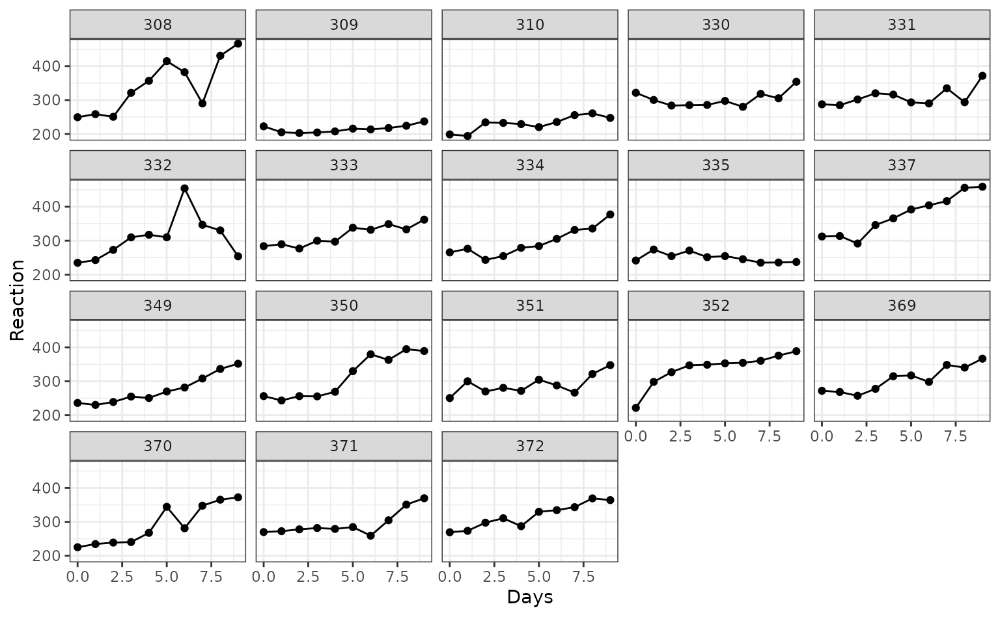

The multilevelmod package is a parsnip extension package for multi-level models, which are also known as mixed-effects models, Bayesian hierarchical models, etc. The models wrapped by the multilevelmod package tend to have somewhat different interfaces than the average R modeling package, mostly due to how random effects and independent experimental units are specified.
This vignette is an overview of how to fit these models. For brevity, we only discuss linear models but the syntax also works for binomial, multinomial, and Poisson outcomes.
library(tidymodels)
library(multilevelmod)
tidymodels_prefer()
theme_set(theme_bw())We’ll use some single factor repeated measures experiment data from the lme4 package, on the effect of sleep deprivation on reaction time.
data(sleepstudy, package = "lme4")
sleepstudy %>%
ggplot(aes(x = Days, y = Reaction)) +
geom_point() +
geom_line() +
facet_wrap(~ Subject) 
To show how prediction works, let’s create a new data frame for a hypothetical subject “one”:
new_subject <- tibble(
Days = 0:9,
Subject = "one"
)Now let’s look at how the modeling engines work with multilevelmod.
Generalized estimator equations (GEE)
This engine requires the gee package to be installed.
There are no random effects in this model. Like the generalized least
squares model discussed below, this model deals with the within-subject
correlations by estimating a correlation (or covariance) matrix that is
not diagonal. To do this, the model formula should use the
id_var() function. This is a special syntax for creating
model matrices (there is no actual id_var() function) that
designates the column for the independent experimental unit.
The correlation structure can be passed as an engine argument:
gee_spec <-
linear_reg() %>%
set_engine("gee", corstr = "exchangeable")
gee_fit <-
gee_spec %>%
fit(Reaction ~ Days + id_var(Subject), data = sleepstudy)## Beginning Cgee S-function, @(#) geeformula.q 4.13 98/01/27## running glm to get initial regression estimate
gee_fit## parsnip model object
##
##
## GEE: GENERALIZED LINEAR MODELS FOR DEPENDENT DATA
## gee S-function, version 4.13 modified 98/01/27 (1998)
##
## Model:
## Link: Identity
## Variance to Mean Relation: Gaussian
## Correlation Structure: Exchangeable
##
## Call:
## gee::gee(formula = Reaction ~ Days, id = data$Subject, data = data,
## family = gaussian, corstr = "exchangeable")
##
## Number of observations : 180
##
## Maximum cluster size : 10
##
##
## Coefficients:
## (Intercept) Days
## 251.40510 10.46729
##
## Estimated Scale Parameter: 2276.694
## Number of Iterations: 1
##
## Working Correlation[1:4,1:4]
## [,1] [,2] [,3] [,4]
## [1,] 1.0000000 0.5710385 0.5710385 0.5710385
## [2,] 0.5710385 1.0000000 0.5710385 0.5710385
## [3,] 0.5710385 0.5710385 1.0000000 0.5710385
## [4,] 0.5710385 0.5710385 0.5710385 1.0000000
##
##
## Returned Error Value:
## [1] 0Only a single column name can be given to id_var().
When predicting, the id_var column is not required:
## # A tibble: 10 × 3
## .pred Days Subject
## <dbl> <int> <chr>
## 1 251. 0 one
## 2 262. 1 one
## 3 272. 2 one
## 4 283. 3 one
## 5 293. 4 one
## 6 304. 5 one
## 7 314. 6 one
## 8 325. 7 one
## 9 335. 8 one
## 10 346. 9 oneGeneralized least squares
This engine requires the nlme package to be installed.
For this model, the syntax to specify the independent experimental
unit is inside of the corrrelation argument for
nlme::gls(). We’ll pass that as an engine argument.
Possible values can be found using ?nlme::corStruct.
For example:
library(nlme) # <- Only need to load this to get cor*() functions
gls_spec <-
linear_reg() %>%
set_engine("gls", correlation = corCompSymm(form = ~ 1 | Subject))
gls_fit <-
gls_spec %>%
fit(Reaction ~ Days, data = sleepstudy)
gls_fit## parsnip model object
##
## Generalized least squares fit by REML
## Model: Reaction ~ Days
## Data: data
## Log-restricted-likelihood: -893.2325
##
## Coefficients:
## (Intercept) Days
## 251.40510 10.46729
##
## Correlation Structure: Compound symmetry
## Formula: ~1 | Subject
## Parameter estimate(s):
## Rho
## 0.5893103
## Degrees of freedom: 180 total; 178 residual
## Residual standard error: 48.3595As with the GEE model, only the regression terms are required for prediction:
## # A tibble: 10 × 3
## .pred Days Subject
## <dbl> <int> <chr>
## 1 251. 0 one
## 2 262. 1 one
## 3 272. 2 one
## 4 283. 3 one
## 5 293. 4 one
## 6 304. 5 one
## 7 314. 6 one
## 8 325. 7 one
## 9 335. 8 one
## 10 346. 9 oneLinear mixed effects via lme
This engine requires the nlme package to be installed.
For models created by nlme::lme(), the random effects
are specified in an argument called random. This can be
passed via set_engine(). The formula specified for
fit() should only include the fixed effects for the
model.
To fit the basic random intercept model:
lme_spec <-
linear_reg() %>%
set_engine("lme", random = ~ 1 | Subject)
lme_fit <-
lme_spec %>%
fit(Reaction ~ Days, data = sleepstudy)
lme_fit## parsnip model object
##
## Linear mixed-effects model fit by REML
## Data: data
## Log-restricted-likelihood: -893.2325
## Fixed: Reaction ~ Days
## (Intercept) Days
## 251.40510 10.46729
##
## Random effects:
## Formula: ~1 | Subject
## (Intercept) Residual
## StdDev: 37.12383 30.99123
##
## Number of Observations: 180
## Number of Groups: 18For predictions, tidymodels uses only the “population effects”, i.e., no-subject specific random effects. We have designed tidymodels so that you should not know about the specific training set values when making any type of prediction.
For lme fit objects, the subject column, if given, is ignored. When
the underlying
predict() function is used, the level = 0
argument is automatically invoked:
## # A tibble: 10 × 3
## .pred Days Subject
## <dbl> <int> <chr>
## 1 251. 0 one
## 2 262. 1 one
## 3 272. 2 one
## 4 283. 3 one
## 5 293. 4 one
## 6 304. 5 one
## 7 314. 6 one
## 8 325. 7 one
## 9 335. 8 one
## 10 346. 9 one
# For this design, this is the same prediction as a training set point:
predict(lme_fit, sleepstudy %>% filter(Subject == "308"))## # A tibble: 10 × 1
## .pred
## <dbl>
## 1 251.
## 2 262.
## 3 272.
## 4 283.
## 5 293.
## 6 304.
## 7 314.
## 8 325.
## 9 335.
## 10 346.Models using lmer, glmer, and stan_glmer
The "lmer", "glmer", and
"stan_glmer" engines all use the same formula syntax for
fitting multilevel models. See Section
2.1 of Linear Mixed Models with lme4 for details. In this
section, we’ll demonstrate using the "lmer" engine.
All of the model specification occurs in the formula; no models terms
are specified via set_engine() (although other arguments
can be passed there, as usual). To fit the same random intercept model,
the syntax is:
lmer_spec <-
linear_reg() %>%
set_engine("lmer")
lmer_fit <-
lmer_spec %>%
fit(Reaction ~ Days + (1|Subject), data = sleepstudy)
lmer_fit## parsnip model object
##
## Linear mixed model fit by REML ['lmerMod']
## Formula: Reaction ~ Days + (1 | Subject)
## Data: data
## REML criterion at convergence: 1786.465
## Random effects:
## Groups Name Std.Dev.
## Subject (Intercept) 37.12
## Residual 30.99
## Number of obs: 180, groups: Subject, 18
## Fixed Effects:
## (Intercept) Days
## 251.41 10.47We predict in the same way.
## # A tibble: 10 × 3
## .pred Days Subject
## <dbl> <int> <chr>
## 1 251. 0 one
## 2 262. 1 one
## 3 272. 2 one
## 4 283. 3 one
## 5 293. 4 one
## 6 304. 5 one
## 7 314. 6 one
## 8 325. 7 one
## 9 335. 8 one
## 10 346. 9 oneTo determine what packages are required for a model, use this function:
required_pkgs(lmer_spec)## [1] "parsnip" "lme4" "multilevelmod"For the "stan_glmer" engine, some relevant arguments
that can be passed to set_engine() are:
-
chains: A positive integer specifying the number of Markov chains. The default is 4. -
iter: A positive integer specifying the number of iterations for each chain (including warmup). The default is 2000. -
seed: The seed for random number generation. -
cores: Number of cores to use when executing the chains in parallel. -
prior: The prior distribution for the (non-hierarchical) regression coefficients. -
prior_intercept: The prior distribution for the intercept (after centering all predictors).
See ?rstanarm::stan_glmer and
?rstan::sampling for more information.
Using tidymodels workflows
If you use workflows, we have a few suggestions.
First, instead of using add_formula(), we suggest using
add_variables(). This passes the columns as-is to the model
fitting function. To add the random effects formula, use the
formula argument of add_model(). For
example:
lmer_wflow <-
workflow() %>%
add_variables(outcomes = Reaction, predictors = c(Days, Subject)) %>%
add_model(lmer_spec, formula = Reaction ~ Days + (1|Subject))
lmer_wflow %>% fit(data = sleepstudy)## ══ Workflow [trained] ════════════════════════════════════════════════════
## Preprocessor: Variables
## Model: linear_reg()
##
## ── Preprocessor ──────────────────────────────────────────────────────────
## Outcomes: Reaction
## Predictors: c(Days, Subject)
##
## ── Model ─────────────────────────────────────────────────────────────────
## Linear mixed model fit by REML ['lmerMod']
## Formula: Reaction ~ Days + (1 | Subject)
## Data: data
## REML criterion at convergence: 1786.465
## Random effects:
## Groups Name Std.Dev.
## Subject (Intercept) 37.12
## Residual 30.99
## Number of obs: 180, groups: Subject, 18
## Fixed Effects:
## (Intercept) Days
## 251.41 10.47If using a recipe, make sure that functions like
step_dummy() do not convert the column for
the independent experimental unit (i.e. subject) to dummy variables. The
underlying model fit functions require a single column for these
data.
Using a recipe also offers the opportunity to set a different role for the independent experiment unit, which can come in handy when more complex preprocessing is needed.
rec <-
recipe(Reaction ~ Days + Subject, data = sleepstudy) %>%
add_role(Subject, new_role = "exp_unit") %>%
step_zv(all_predictors(), -has_role("exp_unit"))
lmer_wflow %>%
remove_variables() %>%
add_recipe(rec) %>%
fit(data = sleepstudy)## ══ Workflow [trained] ════════════════════════════════════════════════════
## Preprocessor: Recipe
## Model: linear_reg()
##
## ── Preprocessor ──────────────────────────────────────────────────────────
## 1 Recipe Step
##
## • step_zv()
##
## ── Model ─────────────────────────────────────────────────────────────────
## Linear mixed model fit by REML ['lmerMod']
## Formula: Reaction ~ Days + (1 | Subject)
## Data: data
## REML criterion at convergence: 1786.465
## Random effects:
## Groups Name Std.Dev.
## Subject (Intercept) 37.12
## Residual 30.99
## Number of obs: 180, groups: Subject, 18
## Fixed Effects:
## (Intercept) Days
## 251.41 10.47Other tips
Finally, there are excellent helper functions in the broom.mixed and
tidybayes packages. If these need the underlying model fit object: the
extract_fit_engine() function can be used on either parsnip
or workflow objects:
lmer_wflow %>%
fit(data = sleepstudy) %>% # <- returns a workflow
extract_fit_engine() # <- returns the lmer object## Linear mixed model fit by REML ['lmerMod']
## Formula: Reaction ~ Days + (1 | Subject)
## Data: data
## REML criterion at convergence: 1786.465
## Random effects:
## Groups Name Std.Dev.
## Subject (Intercept) 37.12
## Residual 30.99
## Number of obs: 180, groups: Subject, 18
## Fixed Effects:
## (Intercept) Days
## 251.41 10.47